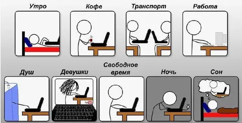

Пару дней назад меня для будущего деврельно-брендового мероприятия попросили описать 1 день из жизни разработчика в нашей команде. Что ж, раз написал - пусть и тут полежит)
9:30 Доброе утро, герой! Ты пришел на работу. Чуть раньше, чем обычно, потому что сначала надо сходить в офисный спортзал - зарядиться энергией на день.
10:00 Вот ты налил кофе (есть еще какаоварка, но это - на полдник!), сел на стул Herman Miller, открыл новенький макбук на м4 и начал с медитации на метрики. Потому что если на метриках непорядок - план на день нуждается в корректировке. Но все ок, алерты не вспыхивали (а им можно доверять), можно до дейлика посмотреть пару пулл-реквестов парней.
10:30 Время дейлика. У бекендеров все было готово еще вчера, но почему-то не собирается. Веб, как обычно, закончил раньше, но им еще ноду обновлять, а то сколько можно. Мобилка пригорает и пытается съехать с автоматизации тестов, иначе не попадем в сроки - окей, автоматизируем потом, пока фича будет крутиться в АБ. Тестирование разводит руками - стенд упал. А голова больше всех болит у продакта.
10:45 Прежде, чем нырять с головой в продуктовые задачи, нужно отсмотреть свежие обращения от саппорта и коллег в рамках дежурства, потому что SLA - как бюджет - закон, его нарушать нельзя, у нас же нет Марти Макфлая в команде.
11:30 Вот теперь можно и за фичи взяться. Как раз пришел в офис продакт, надо с ним обкашлять новиночки в области дизайн-ревью текущей задачи, не дожидаясь встречи. Чтоб уж точно не сделать что-то не то. Через 5 минут уже понятно, за что браться - открываешь иде (расчехляешь курсор), прогреваешь эмулятор - погнали.
14:00 О, а уже обедать скоро. Не беда, сейчас все закажем, притом с оплатой по бейджику и доставкой на рабочий стол. В столовую всей толпой ходили вчера, сегодня - день курочки из Кентукки.
15:00 Вернемся к фиче. Правда, к этому моменту выясняется, что концепция поменялась - нужно срочно браться за другую задачу. Что ж, потребности бизнеса превыше всего. Переобуваемся, фигачим новую задачу.
17:10 Надо бы сходить на техновече - общую встречу разработки, где ребята рассказывают, что классного они сделали/придумали/попробовали, делятся инсайтами, обсуждают архитектуру. Надо бы дойти до переговорки, тем более, что там пицца, но ехать на другой этаж лень, подключаешься по зуму, параллельно вяло пописывая тесты.
18:00 Охапка дров - PR готов! Отправляешь на код-ревью своему лидеру компетенций, потому что решение получилось несколько спорное, пусть рассудит самый экспертный парень на деревне. Внутри команды тоже глянут, но тут нужно второе мнение. Останется только тыкнуть в ci/cd, дальше все само собой случится.
18:05 А пока надо забежать на "3 амиго" - обсуждаем с продактом и тестировщиком следующую фичу, ведь ты будешь ее техлидить. Штормим корнер-кейсы, прикидываем какие тесты можно автоматизировать теми или иными методами из пирамиды тестирования. Снапшотными тестами тут не отделаться, придется попыхтеть над интеграционными, иначе точно где-то ошибемся.
18:30 Близится вечер. Ты прикидываешь, что завтра надо бы запланировать техничку - пришла пора порефачить тот модуль, в котором уже черт ногу сломит. Техноквота - это святое, забивать нельзя. Да и у самого руки чешутся - кому захочется работать в таком коде? Хоть ты сам же его и написал годом раньше. Сразу и начнем.
19:15 Пожалуй, на сегодня хватит. Ты размышляешь, поехать ли домой, или пойти с ребятами поиграть на бильярде на третьем этаже. А может, запереться на полночи в переговорке и рубиться в коднеймс до хрипоты - каждому свое.
19:30 Ты доволен собой - дежурных тикетов на тебе не осталось, фичу толкнул, метрики в порядке, алерты зеленые. А рядом - любимые коллеги травят байки за чашкой чая. Но завтра будет еще круче - ведь завтра синк гильдии, и можно будет пофантазировать о светлом будущем, набросить на вентилятор, обменяться мнениями о новом фреймворке техплатформы. А в пятницу на ретро выскажу все, что накипело, а на разборе инцидентов надо не забыть спросить у девопсов, как откатываться еще быстрее. Движ!
